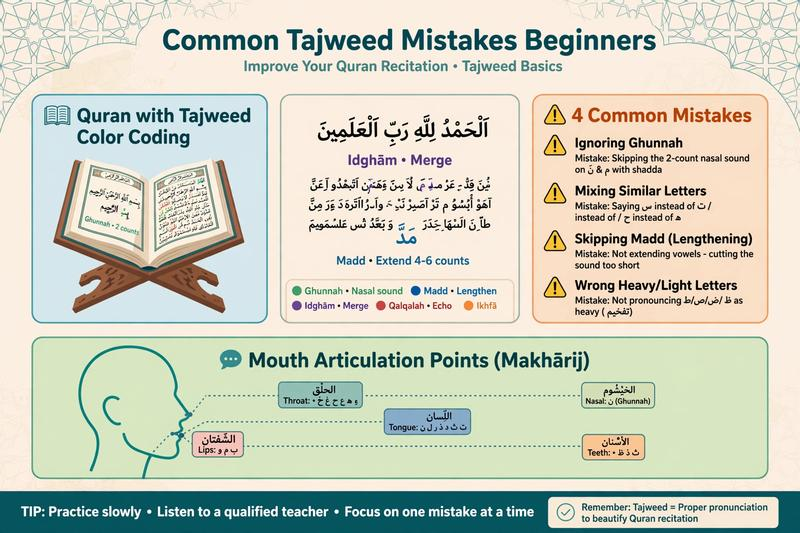

Common Tajweed Mistakes Beginners Make and How to Fix Them

Learning to recite the Quran accurately takes practice, careful listening, and helpful feedback. Beginners may find some Arabic letters difficult to pronounce or need time to understand rules such as ghunnah, qalqalah, and madd. These challenges are a normal part of learning.
This guide explains 10 common Tajweed mistakes, how to recognize them, and practical ways to improve. The examples introduce commonly taught rules; a qualified Quran teacher can help you apply them correctly according to the recitation you are learning.
Start with the foundations of Tajweed, practise one rule at a time, and get feedback on your pronunciation.
Explore Our Online Tajweed Course →Table of Contents
- Why Tajweed Mistakes Matter
- 10 Common Tajweed Mistakes
- A Practical Plan to Improve Your Recitation
- Frequently Asked Questions
Why Tajweed Mistakes Matter
Tajweed is the discipline of reciting the Quran with attention to the pronunciation of letters and the rules of recitation. In Surah Al-Muzzammil (73:4), Allah instructs believers to recite the Quran with measured recitation. Learning Tajweed helps readers develop careful and accurate pronunciation.
Arabic letters can differ in important ways. For example, ق (qaf) and ك (kaf) have different articulation points and sounds. Confusing letters may affect the word being recited. However, not every recitation error has the same significance; the effect depends on the type of error, the word, and the relevant scholarly ruling.
If you are new to the subject, begin with what Tajweed is and why it matters.
10 Common Tajweed Mistakes Beginners Make
1. Confusing Heavy and Light Letters
The mistake: Pronouncing a letter too heavily when it should be light, or making a heavy letter sound too light.
What to know: The seven letters commonly taught as the main letters of tafkheem are خ، ص، ض، غ، ط، ق، ظ. The pronunciation of ر and the ل in the name of Allah also follows specific rules depending on the context.
How to improve: Listen to a qualified reciter and practise difficult letters with a teacher. Avoid exaggerating the heaviness or moving the tongue unnaturally.
Read Tafkheem and Tarqeeq: Heavy and Light Letters for more detail.
2. Incorrect Makharij: Arabic Letter Articulation Points
The mistake: Mixing up letters with similar sounds, such as س and ص, ت and ط, or ذ and ز. Some learners also struggle to distinguish ع from ء.
Why it matters: Each Arabic letter has an articulation point and characteristics that help distinguish it from other letters. For example, ع is articulated from the middle region of the throat, while ء is articulated from the deepest part of the throat.
How to improve: Practise a few difficult letters at a time. Listen carefully, repeat short examples, and ask a teacher to check your pronunciation rather than relying only on transliteration.
Start with Makharij al-Huruf or review the Noorani Qaida guide for beginners.
3. Missing Ghunnah in Noon and Meem Mushaddad
The mistake: Not giving sufficient nasal resonance to نّ and مّ.
Example: In إِنَّ, the noon with shaddah is recited with ghunnah.
How to improve: Practise words containing نّ and مّ and listen for the nasal sound. In the commonly taught Hafs recitation, ghunnah in these cases is generally held for two counts. A count is a recitation timing unit, not a fixed number of seconds.
Learn more in our guide to ghunnah in Tajweed.
4. Mispronouncing Qalqalah Letters
The mistake: Failing to make qalqalah clear when required, or exaggerating it by adding an extra vowel sound.
What to know: The qalqalah letters are ق، ط، ب، ج، د. Qalqalah applies when one of these letters has sukoon, with the strength of the sound depending on its position and the recitation context.
How to improve: Practise examples slowly. Make the sound clear without turning it into an extra syllable or adding a new vowel.
See Qalqalah rules and examples for further explanation.
5. Making Madd Too Short or Too Long
The mistake: Shortening a required elongation or extending a vowel longer than its rule allows.
What to know: Madd has different categories. In the commonly taught Hafs recitation, natural madd is generally two counts, madd lazim is six counts, and madd wajib muttasil is commonly taught as four or five counts depending on the recitation route.
How to improve: Learn one type at a time and practise with a qualified teacher or reliable recitation model. Do not assume every madd has the same length.
Read the different types of madd in Tajweed.
6. Confusing the Rules of Noon Sakinah and Tanween
The mistake: Applying izhar, idgham, iqlab, or ikhfa incorrectly when noon sakin or tanween is followed by another letter.
Example: In مِنْ بَعْدِ, the noon sakin before ب is subject to iqlab in the commonly taught rules. Its sound changes to a concealed meem sound with ghunnah.
How to improve: Learn the four rules separately, then practise short Quranic examples. Identify the following letter before deciding which rule applies.
Continue with our guides to Noon Sakinah and Tanween, Izhar, Idgham, Iqlab, and Ikhfa.
7. Rushing Instead of Reciting Carefully
The mistake: Reading too quickly, causing letters, vowels, or Tajweed rules to become unclear.
How to improve: Choose a short passage and recite it at a comfortable pace. Focus on correct pronunciation before gradually increasing speed. Measured recitation gives you time to notice errors and apply what you have learned.
Accuracy and consistency are more useful learning goals than rushing through a large amount of text.
8. Stopping Without Considering the Meaning
The mistake: Stopping at a place that disrupts the intended meaning, or resuming in a way that makes the meaning unclear.
How to improve: Learn the stopping signs in your mushaf and understand how they are used. Symbols such as م، لا، and ج are commonly used to provide stopping guidance, but conventions and details can vary by edition. Learn their meanings from a reliable teacher or the guide accompanying your mushaf.
Explore Waqf and Ibtida rules for more guidance.
9. Neglecting Recitation Errors in Salah
The mistake: Repeating a pronunciation error without trying to understand or correct it, particularly when reciting Al-Fatihah.
How to improve: Practise Al-Fatihah with a qualified teacher who can listen to your recitation and explain which errors need attention. Beginners should keep learning rather than assuming that every mistake has the same religious consequence.
Whether a particular error affects the validity of Salah depends on the nature of the mistake and the relevant scholarly rulings. If you are concerned about a specific error in prayer, ask a qualified scholar who can consider the details.
You can also review how to pray Salah step by step.
10. Relying on Videos Without Feedback
The mistake: Watching lessons and repeating after a reciter without checking whether your own pronunciation is accurate.
Why feedback helps: A video can demonstrate a sound, but it cannot directly assess your own recitation. Feedback from a qualified teacher can help identify habits that are difficult to notice by yourself.
How to improve: Combine trusted learning resources with regular listening practice and feedback. A live lesson can help you identify pronunciation errors and learn how to correct them.
🎯 Build Better Tajweed Habits
Learning Tajweed is a gradual process. A teacher can listen to your recitation, identify areas for improvement, and help you practise step by step.
A Practical Plan to Improve Your Recitation
There is no single timetable that works for every learner. Progress depends on your starting level, practice routine, the rules you need to learn, and the feedback you receive. Use this flexible plan as a starting point and adjust it with your teacher.
- Begin with a short passage: Practise Al-Fatihah or another familiar passage slowly. Ask your teacher to identify the most important pronunciation issues to address first.
- Work on articulation: Practise a small group of difficult letters, especially those you tend to confuse.
- Study one rule at a time: Focus on a rule such as ghunnah, qalqalah, or noon sakin and tanween. Learn its conditions and practise examples before moving on.
- Review madd and stopping: Learn the relevant elongation rules and stopping guidance for the recitation you are studying.
- Practise consistently: Set aside a manageable amount of time for focused recitation. Regular practice can help reinforce what you learn.
- Get feedback: Recite to a qualified teacher, note corrections, and revisit those points in your next practice session.
Online Quran classes can provide individual feedback and a learning pace suited to your needs. Focus on steady improvement rather than a promised deadline for mastering every rule.
📚 Related Tajweed Guides
Frequently Asked Questions
Can Tajweed mistakes affect the validity of Salah?
It depends on the type of mistake, its effect on the recitation, and the relevant scholarly ruling. Not every pronunciation error has the same consequence. If you are concerned about a particular error in Al-Fatihah or another part of Salah, ask a qualified scholar and continue working on your recitation with a knowledgeable teacher.
How long does it take to improve Tajweed?
There is no fixed timeline. Some learners improve particular pronunciation habits relatively quickly, while other rules take longer to understand and apply consistently. Regular practice and specific feedback can help you measure progress.
Do I need a female Quran teacher?
Some sisters and families prefer learning with a female teacher. The right choice depends on the learner's preferences and needs. Learn more about online female Quran teachers and available learning options.
What is a good way to learn Tajweed online?
A useful approach combines reliable recitation examples, structured lessons, personal practice, and feedback from a qualified teacher. Live lessons can help you identify pronunciation errors and work on them directly.